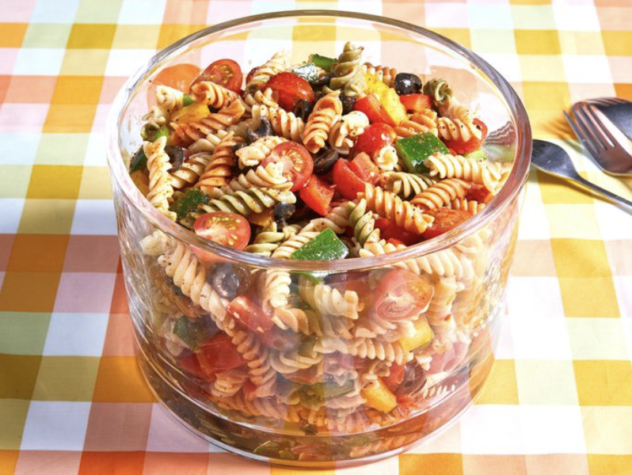

Pasta Salad Recipe
Home

Prep Time: 20 mins
Cook Time: 10 mins
Total Time: 30 mins
Servings: 6
Description
Pasta salad, known in Italian as insalata di pasta or pasta fredda, is a dish prepared with one or more types of pasta, almost always chilled or room temperature, and most often tossed in a vinegar, oil or mayonnaise-based dressing. It is typically served as an appetiser (antipasto) or first course (primo).
Ingredients
- 1 pound tri-colored spiral pasta
- 1 (16 ounce) bottle Italian-style salad dressing
- 6 tablespoons salad seasoning mix
- 2 cups cherry tomatoes, diced
- 1 green bell pepper, chopped
- 1 red bell pepper, diced
- ½ yellow bell pepper, chopped
- 1 (2.25 ounce) can black olives, chopped
Directions
- Gather all ingredients.
- Bring a large pot of lightly salted water to a boil. Cook pasta in the boiling water, stirring occasionally, until tender yet firm to the bite, about 10 to 12 minutes; rinse under cold water and drain.
- Whisk Italian dressing and salad spice mix together until smooth. Combine pasta, tomatoes, bell peppers, and olives in a salad bowl.
- Pour dressing over salad and toss to coat.
- For the best flavor, refrigerate the pasta salad for 8 hours to overnight.
- Enjoy!